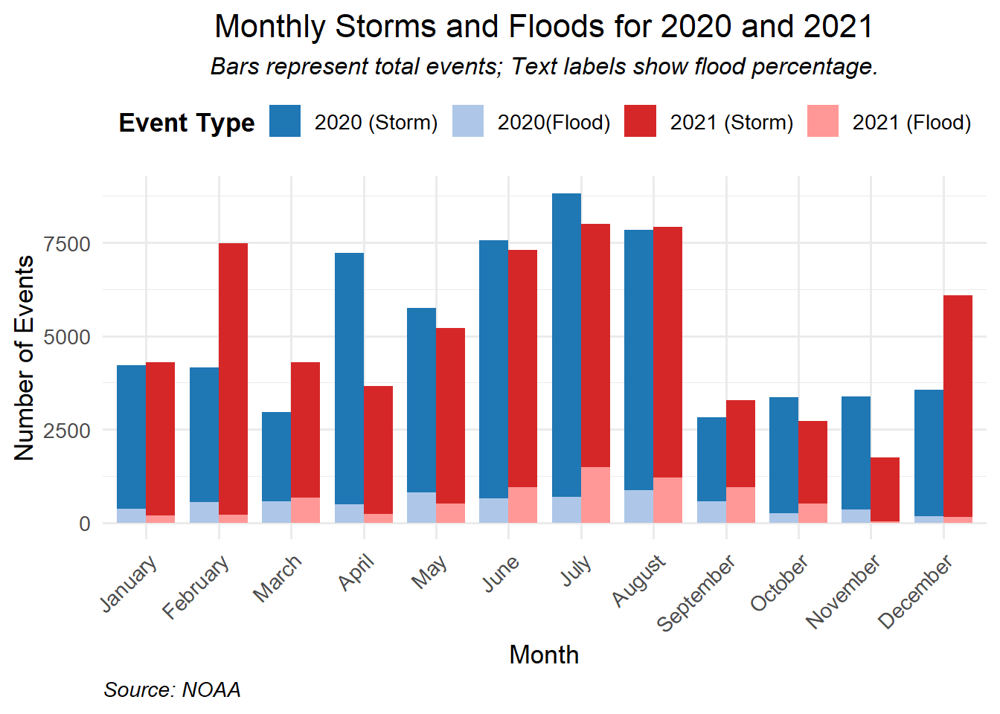

[1] "The column names of the flood dataset are: disasterNumber, state, designatedArea, ihProgramDeclared, iaProgramDeclared, paProgramDeclared, hmProgramDeclared, incidentBeginDate, incidentEndDate"Midterm Project Report
Data acquisition and assessment
Data sources
The dataset for this report has been collated from authoritative sources, specifically the National Oceanic and Atmospheric Administration (NOAA), the Federal Emergency Management Agency (FEMA), and the United States Census Bureau. FEMA provides two files one is disasters information and financial assistance value. This report concentrates on the incidence and impact of floods and storms during the years 2020 to 2021. It aims to shed light on the repercussions of these disasters on affected populations.
Assumptions and motivations
In this analysis, I operate under the assumption that there is a discernible relationship between the frequency and severity of storm and flood events and their socio-economic impact on communities, as recorded by census data. By examining monthly occurrences of storms and floods in 2020 and 2021, I aim to identify any patterns in their occurrence and the extent of their destructiveness.
Additionally, I am motivated by the desire to understand how federal disaster relief funds, distributed by FEMA, assist affected communities, particularly in mitigating poverty levels. This report will investigate the intersection of natural disasters with socio-economic welfare by correlating storm and flood data with the allocation of government aid and its effectiveness in aiding counties and states.
Data cleaning and organization
FEMA Disaster
In concentrating on flood data relevant to the years 2020 and 2021, it is necessary to isolate and extract records of disasters that commenced within this specific time frame and disaster type. In the following data cleaning I will call the FEMA Disaster as flood.
Initially, I will streamline the flood data set by selecting only the essential columns, as it includes redundant information such as the incident type “flood” and the declaration type “DR” which are already established.
The designatedArea field encompasses both county names and Indian Reservation areas; therefore, I have partitioned this field into two distinct columns: County for county-specific data and Indian Reservation for data pertaining to Indian Reservations.
The incidentBeginDate and incidentEndDate is in format Year-Month-DayT00:00:00.000Z. I want to measure the duration of flood in days, so I first split the date into BEGIN_YEAR, BEGIN_MONTH, BEGIN_DAY, END_YEAR, END_MONTH, END_DAY, and calculate the duration using these six variables.
FEMA Financial Assistance Values
The financial assistance value contains information includes the number of approved applications, as well as individual, public assistance, and hazard mitigation grant amounts. Here I’ll call it FA. As FA and flood are from FEMA, and they both contain a disasterNumber column. I can use the disasterNumber to filter out the flood disaster in 2020 and 2021.
[1] "The column names of the FA dataset are: disasterNumber, totalNumberIaApproved, totalAmountIhpApproved, totalAmountHaApproved, totalAmountOnaApproved, totalObligatedAmountHmgp"Combine FA into flood and reorganize in the data, changing State Abbreviations into full names. Now flood contains information about flood State, specific region, time, duration, and different types of financial assistance.
[1] "The column names of the flood dataset are: disasterNumber, state, County, IndianReservation, ihProgramDeclared, iaProgramDeclared, paProgramDeclared, hmProgramDeclared, BEGIN_YEAR, BEGIN_MONTH, BEGIN_DAY, END_YEAR, END_MONTH, END_DAY, duration, totalNumberIaApproved, totalAmountIhpApproved, totalAmountHaApproved, totalAmountOnaApproved, totalObligatedAmountHmgp"NOAA Storm Data
NOAA provides storm information in different years, I will focus on storm details and fatalities in 2020 and 2021. Here I use Storm_D20 and Storm_F20 for the detail and fatality in 2020, Storm_D21 and Storm_F21 in 2021.
I aim to extract data detailing the duration of storm events across different regions, while also distinguishing whether these storms resulted in flooding. To achieve a comprehensive analysis, I will utilize the EVENT_ID as a unique identifier to merge and connect related events across various data sets.
[1] "The column names of Storm_D are: EVENT_ID, BEGIN_YEARMONTH, BEGIN_DAY, END_YEARMONTH, END_DAY, STATE, FLOOD_CAUSE"[1] "The column names of Storm_F are: EVENT_ID, FATALITY_AGE, FATALITY_SEX, FATALITY"I employ EVENT_ID as a key to merge the Storm_D and Storm_F data frames, thereby creating a consolidated Storm data frame. The suffixes “20” and “21” in the data frame names indicate the respective years of 2020 and 2021.
To calculate the duration of storm events, I first separate the BEGIN_YEARMONTH column into two new columns: BEGIN_YEAR and BEGIN_MONTH. With this temporal data disaggregated, I then compute the duration of each event in days, spanning both years of interest, 2020 and 2021.
I have generated a FLOOD column which employs a binary coding system, where the value 1 indicates the storm event resulted in a flood, as derived from the FLOOD_CAUSE field, and 0 signifies a non-flood storm event.
Finally, I restructured the data frames to enhance readability, ensuring that the information is presented in a clear and logical format.
CENSUS Information
The CENSUS data frames are structured with designated regions across all US states represented in rows, while various socio-demographic variables, such as education level and gender, form the columns. My analysis will concentrate on the proportion of the population living below the poverty line. Given that there are separate files for each year, it’s crucial to verify that the regions align in the same sequence to enable accurate year-over-year comparisons.
[1] "CENSUS2021 and CENSUS220 have the same area data"I will concentrate on examining the proportion of individuals living below the poverty line, segmented by gender. To this end, I have filtered the relevant data into two separate frames: P_pov21 for the year 2021, and P_pov20 for the year 2020.
References
NOAA data:
FEMA data:
FEMA Dataset: Disaster Declaration Summaries - v2 FEMA Dataset: FEMA Web Disaster Summaries - v1
CENSUS data:
Initial Questions
Which U.S. states recorded the greatest number of storm occurrences in the years 2020 and 2021?
What was the monthly rainfall distribution pattern across the U.S. during 2020-2021?
What was the severity and fatality rate associated with floods in the U.S. throughout 2020-2021?
Is there a discernible correlation between the duration of storms and the likelihood of resulting floods during 2020-2021?
What forms of support and assistance has the government provided to regions affected by flooding in 2020-2021?
EDA
Monthly Storms and Floods for 2020 and 2021

The frequency of storms reached its zenith in the summer months of June through August, accompanied by a significant increase in storm activity in February of 2021.
Flood-related disasters were most common in March and September, indicating seasonal peaks in flood occurrences.
December experienced the lowest incidence of floods, indicating a seasonal downturn in such events
Monthly Fatalities by Flood for Top 20 States
The visual analysis of fatality data reveals distinct patterns of flood-related deaths across various regions. Notably, Arizona experienced a significant number of fatalities during the monsoon season, spanning from June to September, in both 2020 and 2021.
In February 2021, Texas encountered a particularly lethal flood, while Oregon reported a severe flood in June of the same year.
Moreover, Wisconsin, Texas, and California consistently reported fatalities due to flooding throughout the two-year period, indicating a persistent risk of dangerous flooding events in these states.
Relationship between Financial Assistance and Poverty Percentage
Each data point corresponds to a county, with the color coding indicative of the state. The trend appears to suggest that states with a higher percentage of the population living below the poverty line tend to receive greater financial assistance from the government.
Nonetheless, the relationship is not straightforward, as evident by the considerable variation in financial support provided to states with comparable poverty levels.
Predicted Probability of Flood by Storm Duration
Call:
glm(formula = FLOOD ~ duration + MONTH_NAME + factor(BEGIN_YEAR),
family = binomial, data = Plot4)
Coefficients:
Estimate Std. Error z value Pr(>|z|)
(Intercept) -2.601172 0.039325 -66.145 < 2e-16 ***
duration -0.053781 0.002613 -20.582 < 2e-16 ***
MONTH_NAMEAugust 0.744590 0.045354 16.417 < 2e-16 ***
MONTH_NAMEDecember -0.765208 0.069751 -10.971 < 2e-16 ***
MONTH_NAMEFebruary -0.015209 0.053962 -0.282 0.778065
MONTH_NAMEJanuary 0.005125 0.058271 0.088 0.929913
MONTH_NAMEJuly 0.720339 0.044994 16.010 < 2e-16 ***
MONTH_NAMEJune 0.502924 0.046918 10.719 < 2e-16 ***
MONTH_NAMEMarch 1.061274 0.049897 21.269 < 2e-16 ***
MONTH_NAMEMay 0.635240 0.048569 13.079 < 2e-16 ***
MONTH_NAMENovember 0.229797 0.065540 3.506 0.000455 ***
MONTH_NAMEOctober 0.769289 0.054875 14.019 < 2e-16 ***
MONTH_NAMESeptember 1.600139 0.049055 32.619 < 2e-16 ***
factor(BEGIN_YEAR)2021 0.147012 0.018748 7.842 4.45e-15 ***
---
Signif. codes: 0 '***' 0.001 '**' 0.01 '*' 0.05 '.' 0.1 ' ' 1
(Dispersion parameter for binomial family taken to be 1)
Null deviance: 85230 on 123740 degrees of freedom
Residual deviance: 81634 on 123727 degrees of freedom
AIC: 81662
Number of Fisher Scoring iterations: 6In the final stage of analysis, I conducted a logistic regression using storm duration and month variables—stratified by the years 2021 and 2022—as predictors for the likelihood of flooding.
The results indicate a counterintuitive negative relationship between storm duration and the probability of a flood event. Specifically, as the duration of a storm extends over more days, the likelihood of it resulting in a flood appears to diminish.